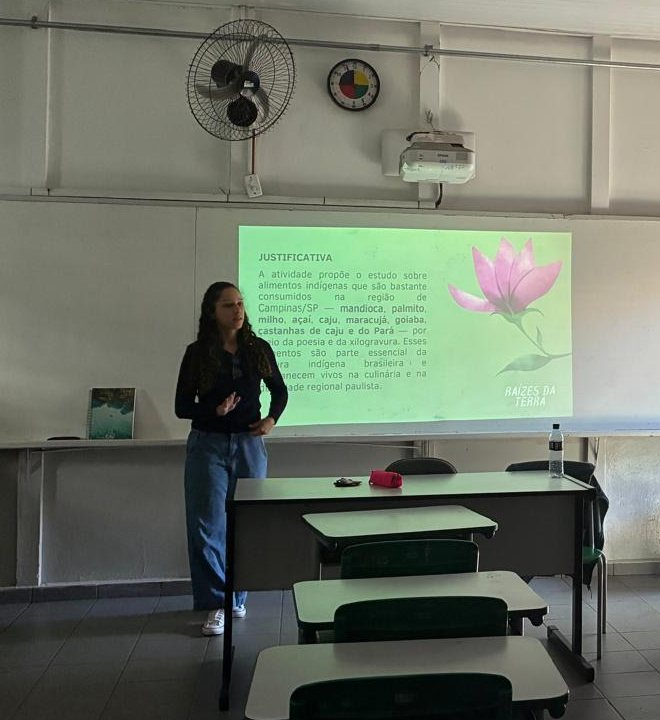

Acompanhamento pedagógico, aulas de reforço e acolhimento para crianças e adolescentes — em Itatiba ou online. E trilhas de aprendizagem sob medida, para escolas e empresas.
Serviços pensados para cada momento da aprendizagem
Atendimento individual e humano, presencial em Itatiba–SP ou online para todo o Brasil. E material de aprendizagem sob medida, para escolas e empresas.
Atendimento online
Acompanhamento pedagógico e psicopedagógico a distância, em encontros individuais por vídeo. Planos de aprendizagem personalizados e orientação para famílias — onde você estiver.
Reforço escolar para a Educação Infantil e o Ensino Fundamental I. Apoio nas tarefas, metodologias ativas e estratégias que despertam a autonomia e o prazer de aprender.
Escuta atenta e acolhedora para crianças e estudantes, incluindo acompanhamento de TEA e dislexia. Um espaço seguro, guiado pela Comunicação Não Violenta, para aprender com confiança.
Transformo um conteúdo em percurso navegável: um mapa, paradas, desafios de escolha com devolutiva e progresso visível. Serve para qualquer matéria da escola — e para empresas, em treinamento, reciclagem e integração de novas pessoas.
Transformo qualquer matéria num percurso navegável — com mapa, paradas, desafios de escolha e progresso visível. Quem aprende decide o caminho, e descobre na hora por que acertou ou errou. Pedagogia aplicada ao treinamento, com pós em Educação Corporativa e em Gestão de Pessoas.
1Você traz o conteúdo. Eu desenho o percurso — quantas paradas, em que ordem e por qual lógica se avança.
2Cada parada vira aprofundamento mais desafio: duas respostas possíveis, e uma devolutiva que explica tanto o acerto quanto o erro.
3O progresso fica visível, e o percurso roda no navegador — sem instalar nada, no computador ou no celular.
Escolas e cursosTreinamentoReciclagemIntegração de novas pessoas
Percorro o continente e transformo o que vejo em aula: geografia, cultura e língua de cada lugar, contadas no lugar. Roteiros escritos, gravações em andamento — as primeiras saem no YouTube.
Chile
Do nível do mar em Isla Negra aos 3.330 m de El Colorado. Gravações feitas em Santiago e na cordilheira.
Argentina
A descida de Valle Nevado ao Río de la Plata, passando pela pampa e pelo delta do Paraná.
Uruguai
A costa de oeste a leste, de Colonia del Sacramento até onde o rio vira mar, em Punta del Este.
Quem sou
Educar é acolher e caminhar junto com cada estudante.
Sou pedagoga formada pela Unicamp, com atuação na Educação Infantil, no Fundamental I e na formação de jovens aprendizes. Oito anos acompanhando a aprendizagem de perto e cuidando da relação com as famílias.
Também levo a educação para fora da sala de aula: sou roteirista, produtora e apresentadora de conteúdo educativo, do rádio ao vivo ao podcast. A escuta é a mesma, apenas em outro formato.
O registro oral e fotográfico atravessa o que faço — na documentação dos percursos de aprendizagem, nas entrevistas e nos materiais que produzo.
Atualmente curso pós-graduação em Psicopedagogia, em Gestão de Pessoas e Psicologia Organizacional e em Educação Corporativa e Pedagogia Empresarial. Estudo para entender melhor o que já vejo na prática: por que um estudante trava, o que destrava, e como uma instituição ajuda ou atrapalha nisso.
Educação Infantil e Fundamental IJovens aprendizesEscola pública e particularRádio, podcast e vídeoPesquisa e acervo
140+jovens e crianças acompanhados
8+anos dedicados à educação
3pós-graduações em andamento
— Ana Claudia Morais Alves

Raízes da Terra — projeto sobre os alimentos indígenas que seguem na mesa paulista, estudados por meio da poesia e da xilogravura.
Experiência
Oito anos entre a sala de aula, o acervo e o microfone.
Da Educação Infantil à formação de jovens aprendizes, em escola pública e particular. E a produção de conteúdo educativo — rádio comunitária, podcast de história oral e comunicação digital de cursinhos populares.
3 pós-graduaçõesPsicopedagogia · Gestão de Pessoas · Educação Corporativa
140+ estudantesacompanhados em escolas e projetos
14 episódiosde podcast produzidos e apresentados
Antes de perguntar
O que as famílias costumam querer saber.
Se a sua dúvida não estiver aqui, me chame no WhatsApp — respondo pessoalmente.
Como funciona o atendimento online?
Encontros individuais por vídeo, com plano combinado conforme o que o estudante precisa. Funciona para qualquer lugar do Brasil — só é preciso computador ou tablet com internet, e um adulto por perto no começo, no caso das crianças menores.
Para que idades você atende?
Da Educação Infantil ao 5º ano nas aulas de reforço. No acolhimento e na orientação a famílias, atendo também adolescentes. Já trabalhei com jovens aprendizes, então formação de adolescentes também está no repertório.
Quanto tempo dura cada encontro?
Em geral de 50 minutos a uma hora, conforme a idade e a concentração do estudante. Com crianças pequenas costumo encurtar e aumentar a frequência — rende mais do que um encontro longo.
Atende estudantes com TEA ou dislexia?
Sim. Tenho experiência de sala de aula com os dois, e adapto as estratégias caso a caso. O ponto de partida é sempre a observação: como esse estudante específico lê, onde trava e o que já funciona para ele.
Como a família acompanha o processo?
Com relatórios e conversas periódicas. A família sabe o que está sendo trabalhado e por quê. Sem isso, escola e casa puxam para lados diferentes, e quem fica no meio é o estudante.
E os valores?
Dependem da modalidade, da frequência e da duração. Prefiro conversar antes para entender o caso — não faço orçamento sem saber o que a criança precisa. A primeira conversa é sem compromisso.
Como funciona uma trilha de aprendizagem?
Você traz o conteúdo e eu desenho o percurso: mapa, paradas, desafios de escolha com devolutiva e progresso visível. Roda no navegador, sem instalar nada. Serve para matéria escolar e para treinamento, reciclagem e integração em empresas.
Preciso de equipe de tecnologia para usar uma trilha?
Não. A trilha é uma página que abre no navegador, no computador ou no celular. Pode ficar num endereço próprio ou dentro do ambiente que a escola ou a empresa já usa.
A agenda está aberta para novos atendimentos e aulas. Fale comigo pelo WhatsApp para uma conversa sem compromisso. Juntos, encontramos o melhor caminho de aprendizagem — com acolhimento e cuidado.